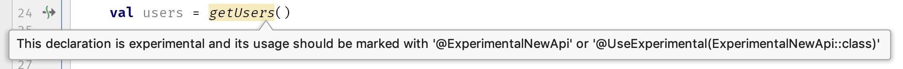

Item 28: Specify API stability
Life would be much harder if every car was totally different to drive. There are some elements in cars that are not universal, like the way we preset radio stations, and I often see car owners having trouble using them. We are too lazy to learn meaningless and temporary interfaces. We prefer stable and universal ones.
Similarly, in programming, we much prefer stable and possibly standard Application Programming Interfaces (API). The main reasons are:
- When the API changes and developers get the update, they will need to manually update their code. This point can be especially problematic when many elements depend on this API. Fixing its use or giving an alternative might be hard. Especially if our API was used by another developer in a part of our project we are not familiar with. If it is a public library, we cannot adjust these uses ourselves, but instead, our users have to make the changes. From a user’s perspective, it is not a comfortable situation. Small changes in a library might require many changes in different parts of the codebase. When users are afraid of such changes, they stay on older library versions. This is a big problem because updating becomes harder and harder for them, and new updates might have things they need, like bug fixes or vulnerability corrections. Older libraries may no longer be supported or might stop working entirely. It is a very unhealthy situation when programmers are afraid to use newer stable releases of libraries.
- Users need to learn a new API. This is additional energy users are generally unwilling to spend. What’s more, they need to update knowledge that changed. This is painful for them as well, so they avoid it. Not healthy either: outdated knowledge can lead to security issues and learning changes the hard way.
On the other hand, designing a good API is very hard, and so creators want to make changes to improve it. The solution that we (the programming community) developed is that we specify API stability.
The simplest way is that creators should specify in the documentation to make it clear if an API or some of its parts are unstable. More formally, we specify the stability of the whole library or module using versions. There are many versioning systems, though there is one that is now so popular it can be treated nearly like a standard. It is Semantic Versioning (SemVer), and in this system, we compose version number from 3 parts: MAJOR.MINOR.PATCH. Each of those parts is a positive integer starting from 0, and we increment each of them when changes in the public API have concrete importance. So we increment:
- MAJOR version when you make incompatible API changes.
- MINOR version when you add functionality in a backward-compatible manner.
- PATCH version when you make backward-compatible bug fixes.
When we increment MAJOR, we set MINOR and PATCH to 0. When we increment MINOR we set PATCH to 0. Additional labels for pre-release and build metadata are available as extensions to the MAJOR.MINOR.PATCH format. Major version zero (0.y.z) is for initial development, and with this version, anything may change at any time, and the public API should not be considered stable. Therefore when a library or module follows SemVer and has MAJOR version 0, we should not expect it to be stable.
Do not worry about staying in beta for a long time. It took over 5 years for Kotlin to reach version 1.0. This was a very important time for this language since it changed a lot in this period.
When we introduce new elements into a stable API, and they are not yet stable, we should first keep them for some time in another branch. When you want to allow some users to use it (by merging code into the main branch and releasing it), you can use the Experimental meta-annotation to warn them that they are not yet stable. It makes elements visible, but their use displays a warning or an error (depending on set level).
@Experimental(level = Experimental.Level.WARNING)
annotation class ExperimentalNewApi
@ExperimentalNewApi
suspend fun getUsers(): List<User> {
//...
}

We should expect that such elements might change at any moment. Again, don’t worry to keep elements experimental for a long time. Doing that slows down adoption, but also helps us design good API for longer.
When we need to change something that is part of a stable API, to help users deal with this transition, we start with annotating this element with the Deprecated annotation:
@Deprecated("Use suspending getUsers instead")
fun getUsers(callback: (List<User>)->Unit) {
//...
}
Also, when there is a direct alternative, specify it using ReplaceWith to allow the IDE to make automatic transition:
@Deprecated("Use suspending getUsers instead",
ReplaceWith("getUsers()"))
fun getUsers(callback: (List<User>)->Unit) {
//...
}
An example from the stdlib:
@Deprecated("Use readBytes() overload without "+
"estimatedSize parameter",
ReplaceWith("readBytes()"))
public fun InputStream.readBytes(
estimatedSize: Int = DEFAULT_BUFFER_SIZE
): ByteArray {
//...
}
Then we need to give users time to adjust. This should be a long time because users have other responsibilities than adjusting to new versions of libraries they use. In widely used APIs, this takes years. Finally after this time, in some major release, we can remove the deprecated element.
Summary
Users need to know about API stability. While a stable API is preferred, there is nothing worse than unexpected changes in an API that supposed to be stable. Such changes can be really painful for users. Correct communication between module or library creators and their users is important. We achieve that by using version names, documentation, and annotations. Also, each change in a stable API needs to follow a long process of deprecation.